Sonnenuntergang am Strand
Der Strand von Kuta ist 2,5 Kilometer lang und wird auch Sunset Beach genannt. Wir waren an fünf verschiedenen Abenden dort, vier im Juli und einen im August, und haben jedes Mal Fotos gemacht.

Im Juli und August 2026 waren wir auf Bali, beide Male in Kuta. Hier erzählen wir, was wir gesehen haben, und was du für deine Reise wissen solltest.
Guide entdeckenBali hat sehr verschiedene Ecken. Wir kennen nur einen kleinen Teil davon: Kuta im Südwesten, einen Vormittag in Sanur und den Hafen Padang Bai, von dem aus es nach Lombok und zu den Gilis geht.
Was wir selbst gesehen haben, erzählen wir dir. Alles andere haben wir nachgeschlagen und mit Quelle und Stand markiert: Ubud, Canggu, Uluwatu, den Osten und Norden und die Nusa-Inseln findest du weiter unten bei den Regionen. Wir haben diese Orte nicht selbst besucht, das steht dort deutlich.

Gewohnt haben wir im Le Lima Hotel in Kuta und später in einem anderen Hotel mit Pool.
Wir hatten kein grosses Programm. Hängen geblieben sind uns die Abende am Strand.


Der Strand von Kuta ist 2,5 Kilometer lang und wird auch Sunset Beach genannt. Wir waren an fünf verschiedenen Abenden dort, vier im Juli und einen im August, und haben jedes Mal Fotos gemacht.
Von hier fahren die Boote nach Lombok und zu den Gilis. Wir waren am 6. Juli auf dem Weg nach Gili Air dort. Am Strand neben dem Anleger lagen bunte Auslegerboote.
In Sanur waren wir nur einen Vormittag, am 7. August. Von der Terrasse eines grossen Einkaufszentrums siehst du aufs Meer.
Wir kennen Kuta von zwei Aufenthalten und Sanur von einem Vormittag. Die Angaben zu den Orten stammen deshalb zu einem Teil aus Wikipedia, mit Stand Oktober 2026.
Kuta liegt im Bezirk Badung, ganz nah am Flughafen. Der Strand heisst Sunset Beach und gilt als Surfstrand mit regelmässig guten Wellen. Kuta war ein kleines Fischerdorf und gehörte laut Wikipedia zu den ersten Orten auf Bali mit viel Tourismus. Entsprechend belebt sind Strand und Strassen.
Sanur liegt an der Südostküste, laut Wikipedia rund 30 Autominuten vom Flughafen. Der Strand heisst Sunrise Beach, die Sonne geht hier also über dem Meer auf. Sanur gilt als der älteste Ort für Strandtourismus auf Bali, älter als Kuta, Nusa Dua und Uluwatu.
Das können wir nicht für dich entscheiden. Wenn du Sonnenuntergänge am Meer willst, bist du in Kuta richtig, denn der Strand schaut nach Westen. Sonnenaufgänge gibt es in Sanur. Mehr als diesen Unterschied und unseren Vormittag dort können wir zu Sanur nicht sagen.
Fünf Orte, an denen wir Fotos gemacht haben. Zu jedem schreiben wir, was wir gesehen haben und was wir nachgeschlagen haben.
Die Sonne geht hier über dem offenen Meer unter.

Worum es gehtKuta Beach ist 2,5 Kilometer lang und heisst auch Sunset Beach. Surfer mögen ihn laut Wikipedia wegen der regelmässig guten Wellen. Am Strand stehen Schirme, und am Abend sind viele Leute da.
Lohnt sich das?Für uns ja. Unsere Fotos stammen von fünf verschiedenen Abenden, vier im Juli und einer im August.
Unser TippSei rechtzeitig da. Auf unseren Fotos steht die Sonne Anfang Juli und Anfang August gegen 18 Uhr knapp über dem Horizont, danach wird es schnell dunkel.
Gut zu wissenReisehinweise warnen vor starken Strömungen an beliebten Stränden auf Bali, es gab Ertrinkungsfälle. Die Bedingungen ändern sich schnell. Schau vor dem Baden, wie die Wellen sind, und frag vor Ort, wo es sicher ist.
Ein Einkaufszentrum mit Garten, direkt gegenüber vom Strand.

Worum es gehtBeachwalk liegt an der Jalan Pantai Kuta, gegenüber vom Strand. Es wurde 2013 eröffnet und ist laut einem Reiseportal ein offenes Einkaufszentrum um einen Garten mit Wasserlauf. Es gibt Läden, Restaurants und im oberen Stock ein Kino mit drei Sälen.
Lohnt sich das?Kein Muss. Wir waren tagsüber und abends dort. Auf unseren Fotos siehst du den Garten und abends den beleuchteten Schriftzug.
Unser TippWenn du ohnehin am Strand bist, schau kurz rein. Der Weg ist kurz.
Gut zu wissenÖffnungszeiten haben wir nicht geprüft. Schau sie vor dem Besuch auf der Karte oder bei Google Maps nach.
Hinter dem Strand wird es eng und lebhaft.

Worum es gehtWir sind zu Fuss durch die Gassen rund um unser Hotel gelaufen und haben in Warungs gegessen. Das sind einfache, lokale Restaurants. Auf den Fotos siehst du Reis mit Spiessen und Nasi Goreng mit Spiegelei.
Lohnt sich das?Ja, wenn du Bali nicht nur vom Strand kennenlernen willst.
Unser TippEin einfaches Essen kostet laut Numbeo in Denpasar rund 35.000 IDR (rund 1.60 CHF). In Kuta kann es mehr sein, eigene Preise haben wir nicht notiert.
Gut zu wissenDie Gassen sind schmal, und Roller fahren eng an dir vorbei. Reisehinweise beschreiben den Verkehr auf Bali als ausgesprochen dicht und unberechenbar.
Hier beginnt der Weg zu den Inseln.

Worum es gehtPadang Bai ist ein kleiner Küstenort im Osten Balis, laut Wikipedia rund 56 Kilometer nordöstlich vom Flughafen. Von hier fahren Fähren nach Lembar auf Lombok und Boote zu den Gilis.
Lohnt sich das?Als Zwischenstopp ja, mehr haben wir nicht gesehen. Wir waren am 6. Juli auf dem Weg nach Gili Air hier.
Unser TippPlan Zeit am Hafen ein. Die Hafengebühr von 30.000 IDR (rund 1.40 CHF) pro Person war bei unserem Ticket nicht enthalten und ist vor Ort zu zahlen.
Gut zu wissenIn der Nähe liegt laut Wikipedia die Blue Lagoon, bekannt zum Tauchen und seit 2017 Teil eines Meeresschutzgebiets. Dort waren wir nicht.
Sanur ist der Ort für Sonnenaufgänge.

Worum es gehtSanur ist laut Wikipedia der älteste Ort für Strandtourismus auf Bali. Der Strand heisst auch Sunrise Beach.
Lohnt sich das?Dazu können wir wenig sagen. Wir waren am Vormittag des 7. August in einem grossen Einkaufszentrum mit Terrasse und Meerblick, mehr nicht.
Unser TippWenn du Sanur kennenlernen willst, plan mehr Zeit ein als wir. Laut Wikipedia liegt es rund 30 Minuten Autofahrt vom Flughafen entfernt.
Gut zu wissenEin Küstenabschnitt von 5,1 Kilometern, vom Matahari Terbit Beach bis zum Mertasari Beach, wurde laut Wikipedia 2008 neu aufgeschüttet.


Kuta, Sanur und Padang Bai kennen wir selbst. Alle Orte in diesem Teil haben wir nicht besucht. Wir haben sie nachgeschlagen, die Quellen stehen bei jedem Ort, Stand 10. Oktober 2026. Wo sich Quellen widersprechen, steht das dabei. Die Fotos stammen nicht von uns.
Legian für den Einstieg. Canggu und Medewi mit Erfahrung, Uluwatu nur für Geübte.
Ubud mit Umgebung, Besakih, Uluwatu und die Bergtempel Batukaru und Beratan.
Sidemen, Amed, Candidasa, Munduk und Medewi. Lonely Planet nennt Amed und Tulamben als ruhigere Alternativen.
Tulamben, Amed, Pemuteran mit Menjangan und die Mantas bei Nusa Penida.
Nusa Dua mit ruhigem Wasser und viel Sicherheit, dazu Jimbaran zum Abendessen.
Jatiluwih, Bedugul, die Wasserfälle im Norden und der Sonnenaufgang am Batur.
Hier landest du, hier liegen Kuta und Sanur. Die Orte unten kennen wir nicht aus eigener Erfahrung. Wir haben sie nachgeschlagen und verlinken bei jedem die Quellen.
Zwei Nachbarn von Kuta, die ganz unterschiedlich ticken.
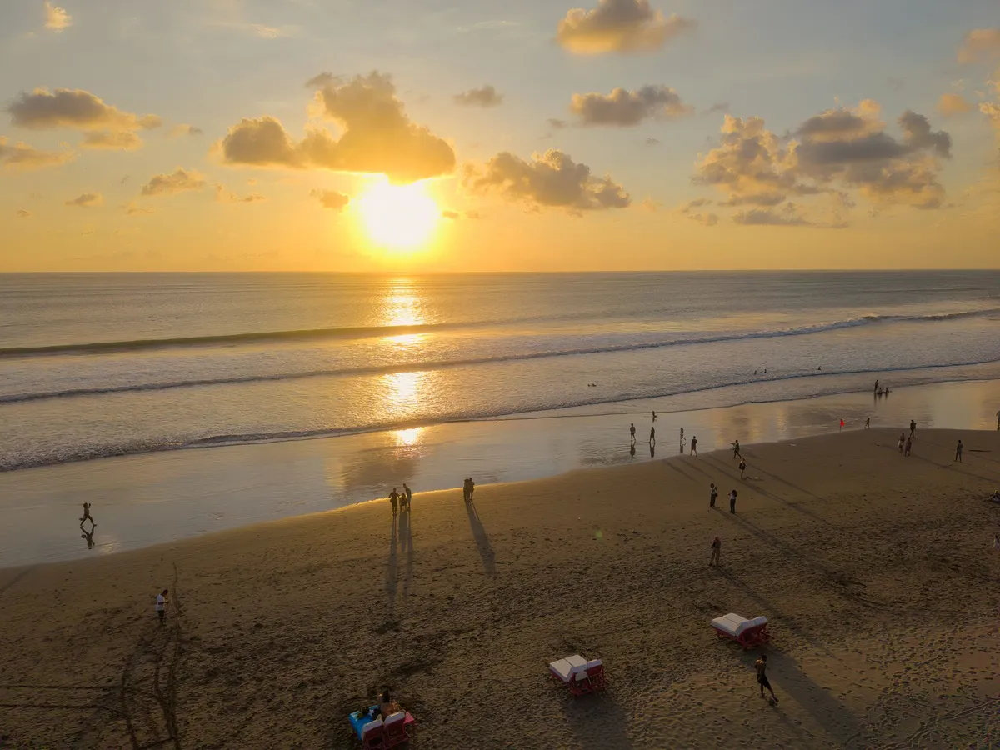
Worum es gehtLegian liegt zwischen Kuta und Seminyak. Es gilt als etwas entspannter als Kuta und weniger edel als Seminyak, mit viel australischem Einfluss. Seminyak ist das schicke, dicht bebaute Viertel nördlich davon, mit Boutiquen, Spas und gehobenen Restaurants. Unterkünfte und Grundstücke gehören dort laut Wikipedia zu den teuersten der Insel.
Was dich erwartetAm Strand von Legian können Anfänger bis Fortgeschrittene surfen, es gibt mehrere Surfschulen. Der Strand von Seminyak ist tagsüber ruhiger als Kuta und bekannt für Sonnenuntergänge. Zum Surfen ist er laut Wikivoyage schlechter als Legian, Kuta oder Canggu. In Seminyak sind Staus ein Dauerthema.
TippsIn Legian sind die Strömungen stark, und der Strand wird nur teilweise von Lifeguards überwacht. Schwimm nicht nachts und achte auf die Flaggen. Wikivoyage nennt Legian ausserdem den besseren Standort als Seminyak, wenn du mit kleinem Budget reist.
AnfahrtAb Flughafen sind es nach Legian rund 15 Minuten, nach Seminyak rund 14 Minuten (Richtwert, berechnet ohne Verkehr).
Gut zu wissenAn der Jl. Legian steht die Gedenkstätte für die Anschläge vom 12. Oktober 2002.
Quellen: Wikipedia: Legian; Travelfish; Wikipedia: Seminyak; Wikivoyage: Seminyak
Aus Reisfeldern wurde eines der beliebtesten Ziele der Insel.
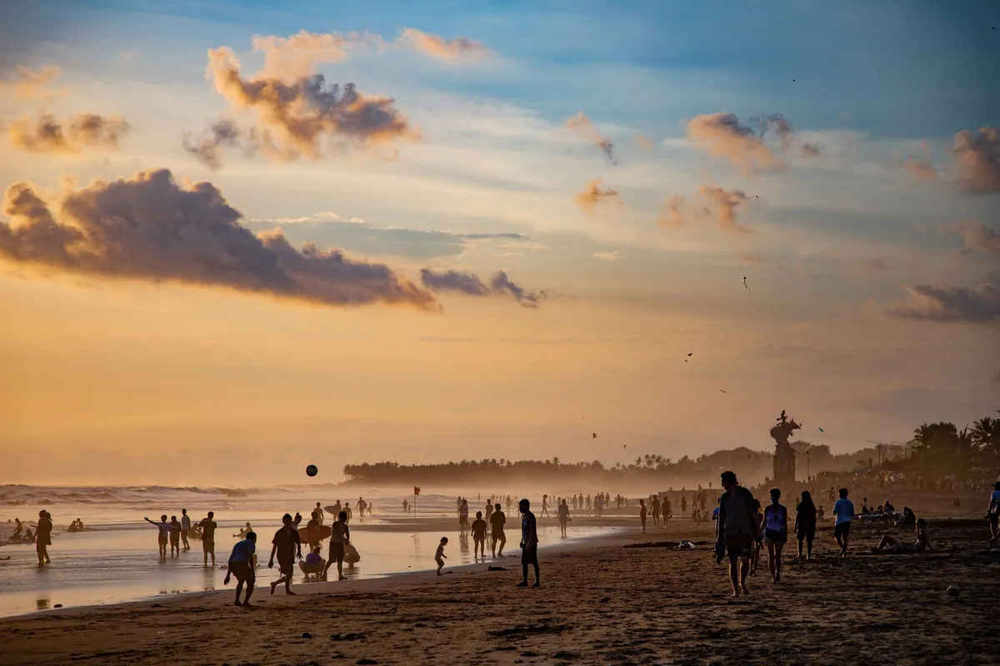
Worum es gehtCanggu war früher Reisfeld und Kokoshain und ist heute ein Ort mit Cafés, Surfspots und vielen Langzeitgästen. Es gibt rund 10 Kilometer Strand und neun benannte Strände, darunter Echo Beach, Batu Bolong, Berawa und Pererenan.
Was dich erwartetCanggu ist bei Longboardern beliebt. Wikivoyage nennt die Spots anspruchsvoll, Wikipedia nennt sie longboard-freundlich, die Quellen sind sich beim Level also nicht einig. Der Sand ist dunkel. Am Batu Bolong Beach wurde 2022 E. coli im Meerwasser nachgewiesen.
TippsPlan für den Verkehr mehr Zeit ein: Die Jl. Raya Canggu gilt laut Wikipedia als notorisch überlastet, und auch die Abkürzung Jl. Anggrek ist oft verstopft. Wikivoyage empfiehlt, den Transfer über die Unterkunft zu buchen, weil Taxis schwer zu bekommen sind.
Gut zu wissenStrassen, Entwässerung und Abfall hinken dem Tourismus laut Wikipedia hinterher, dazu kommt Wasserknappheit. Der Gouverneur hat im September 2025 angekündigt, keine neuen Genehmigungen für Hotels und Restaurants auf Reisfeldern zu erteilen. Wie streng das in Canggu umgesetzt wird, haben wir nicht belegt gefunden.
AnfahrtAb Flughafen rund 26 bis 28 Minuten, je nach Strand (Richtwert, ohne Verkehr).
Quellen: Wikipedia: Canggu; Wikivoyage: Canggu; Adnkronos zum Bauverbot
Der Tempel auf dem Felsen im Meer, besonders zum Sonnenuntergang.
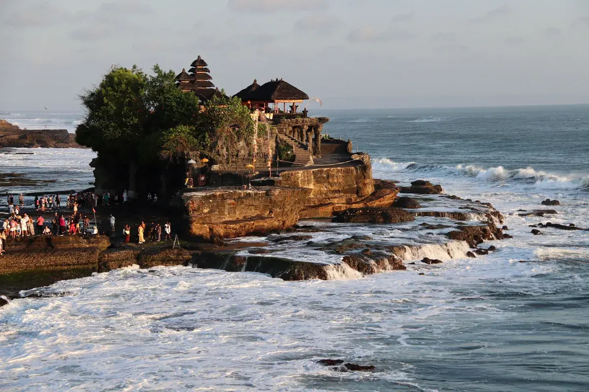
Worum es gehtDer Tempel steht auf einem Felsen vor der Küste und ist eines der bekanntesten Fotomotive Balis. Der Überlieferung nach wurde er im 16. Jahrhundert von Dang Hyang Nirartha gegründet, die Hauptgottheit ist Dewa Baruna, der Meeresgott. In den 1980ern bröckelte der Fels und wurde saniert, über ein Drittel des sichtbaren Felsens ist laut Wikipedia künstlich.
Was dich erwartetBei Ebbe kommst du zu Fuss bis zur Basis des Felsens. In den Tempel selbst dürfen nur Gläubige. Pro Jahr kamen laut einer Studie von 2019 rund 500.000 Besucher.
TippsLaut einem Reiseblog wird es ab etwa 16 Uhr voll, zwischen 12 und 15 Uhr ist es ruhiger. Der Sonnenuntergang ist deshalb der Moment mit dem meisten Andrang. Der Eintritt lag laut diesem Blog im März 2026 bei 75.000 IDR für ausländische Erwachsene, eine offizielle Preisliste haben wir nicht gefunden. Zahl nur bar.
AnfahrtAb Flughafen rund 35 Minuten (Richtwert, ohne Verkehr). Von Canggu aus sind es je nach Quelle 20 bis 45 Minuten.
Gut zu wissenTanah Lot ist kein Badeort. Es eignet sich als Fotostopp für alle, besonders für Paare zum Sonnenuntergang.
Quellen: Wikipedia: Tanah Lot; Reiseblog
Klippen, Weltklasse-Wellen und ein Tempel hoch über dem Meer.
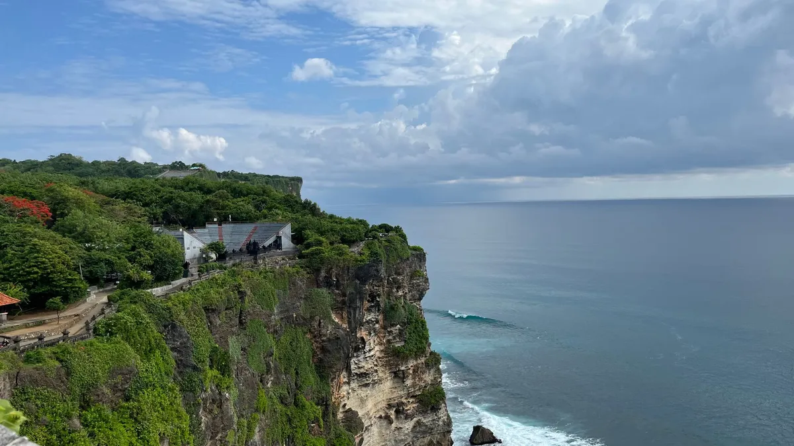
Worum es gehtDie Südwestspitze der Insel ist bekannt für Kalksteinklippen, Surfwellen und den Klippentempel. Aus einem dünn besiedelten Landstrich sind Resorts, Villen und Beach Clubs geworden. Das bringt Verkehr und Druck auf die Küste, darüber wird laut Wikipedia diskutiert.
Uluwatu-TempelDer Tempel steht rund 70 Meter über dem Meer. Er ist der einzige balinesische Meerestempel, der zugleich einer der neun Richtungstempel ist. Täglich gibt es bei Sonnenuntergang einen Kecak-Tanz im Freien, der Beginn wird je nach Quelle mit 17 oder 18 Uhr angegeben, prüf die Zeit vor Ort. Der Eintritt für den Tempel liegt laut den Quellen zwischen 30.000 und 100.000 IDR, für den Tanz zwischen 150.000 und 200.000 IDR. Die Angaben widersprechen sich.
TippsDie Makaken am Tempel klauen Brillen, Kameras, Sandalen und Hüte. Trag Wertsachen geschlossen und halte Abstand. Sarong und Schärpe sind Pflicht und im Gelände leihbar.
Padang PadangEin kleiner weisser Strand von rund 110 Metern zwischen hohen Klippen, der Zugang führt über 120 Stufen. Die linke Welle wird Balinese Pipeline genannt und gilt bei guten Bedingungen als eine der besten der Welt. Surfen ist hier etwas für Erfahrene.
AnfahrtAb Flughafen rund 26 bis 29 Minuten zu Padang Padang, Bingin und dem Tempel (Richtwert, ohne Verkehr). Wikipedia nennt für Uluwatu rund 34 Kilometer zum Flughafen, indonesia.travel rund 45 Minuten ab Kuta. Rechne eher mit mehr.
Quellen: Wikipedia: Uluwatu; Wikipedia: Uluwatu-Tempel; Wikipedia: Padang Padang Beach; Ungasan-Blog
Fisch vom Grill, direkt am Strand.
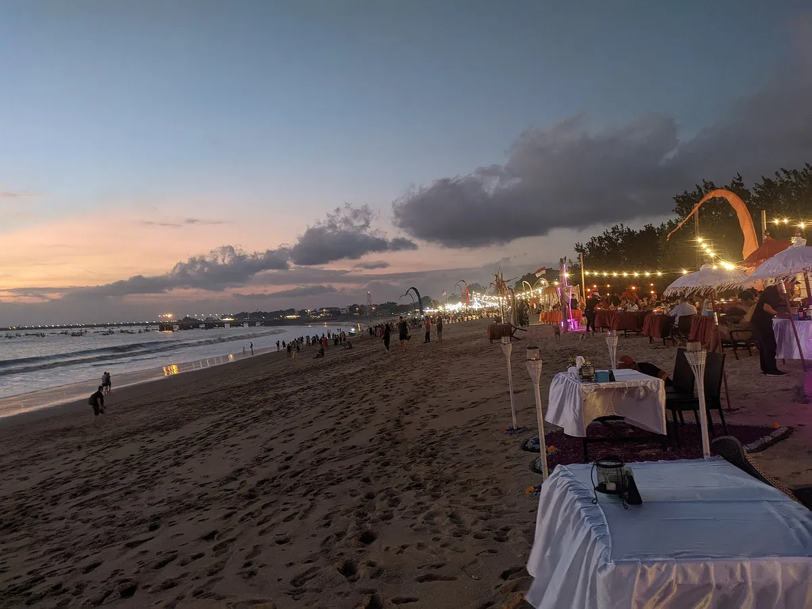
Worum es gehtJimbaran ist ein Fischerdorf am Hals der Bukit-Halbinsel, direkt südlich des Flughafens. Berühmt ist es für Seafood-Stände am Strand: Du suchst den Fisch aus, gegrillt wird meist über Kokosnussschalen, und dazu gibt es den Sonnenuntergang.
Was dich erwartetDie Restaurants säumen den Strand, am Morgen läuft der Fischfang. Die Bucht ist ausserdem Standort vieler Luxusresorts.
TippsAktuelle Preise haben wir nicht belegt gefunden. Frag deshalb vor dem Bestellen nach dem Preis pro Gewicht und nach Beilagen, bevor der Fisch auf den Grill kommt. Das ist unser Rat, kein belegter Fakt.
AnfahrtAb Flughafen rund 16 Minuten (Richtwert, ohne Verkehr).
Quellen: Wikipedia: Jimbaran
Ruhiges Wasser, bewachte Resorts und Wassersport.
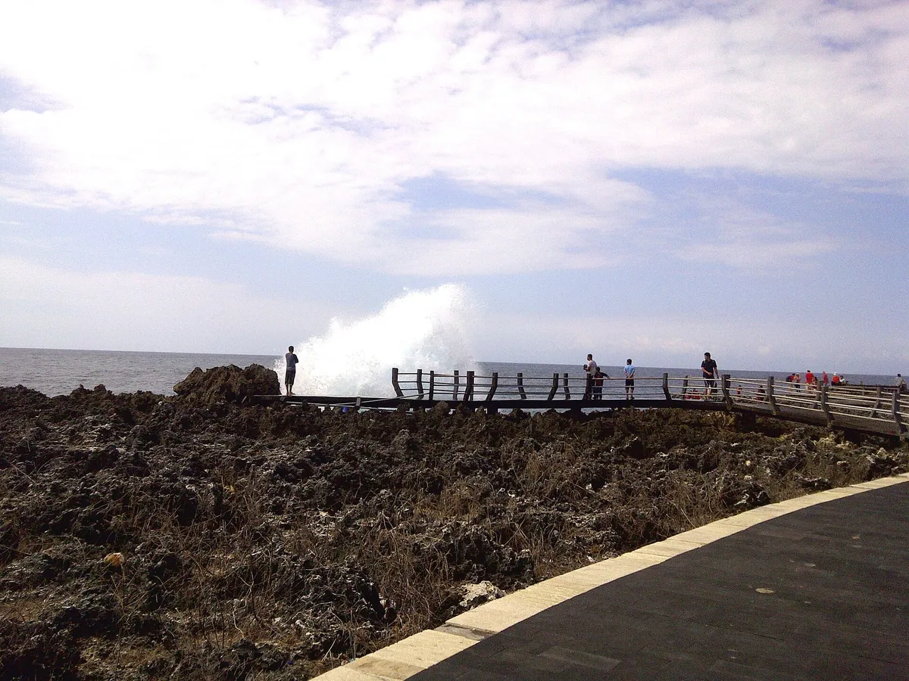
Worum es gehtNusa Dua ist ein geplantes, bewachtes Resortgelände von rund 350 Hektar mit über 20 meist 5-Sterne-Hotels. Die Strände sind weiss und flach, das Wasser ist ruhig. Wikivoyage nennt den Ort künstlich und steril, Pantai Geger am Westrand sei lokaler.
Was dich erwartetDer Geger Beach ist wegen des ruhigen Wassers beliebt. Beim Water Blow spritzen die Wellen bei Flut an den Klippen bis rund 30 Meter hoch. Direkt nördlich liegt Tanjung Benoa, das Zentrum der Wassersport-Anbieter: Bananenboot, Parasailing, Tauchen, Schnorcheln und mehr.
TippsDer Ort passt für Erholung und Familien, weniger für balinesischen Alltag. Für Wassersport ist Tanjung Benoa die Adresse, die Strände dort sind allerdings erodiert, nachdem früher Riffe abgebaut wurden.
AnfahrtAb Flughafen rund 16 Minuten nach Nusa Dua und 21 Minuten nach Tanjung Benoa (Richtwert, ohne Verkehr). Wikivoyage nennt für Nusa Dua 20 bis 30 Minuten.
Quellen: Wikipedia: Nusa Dua; Wikipedia: Tanjung Benoa; Wikivoyage: Nusa Dua
Die Hauptstadt ohne Strand und ein Riese aus Metall.
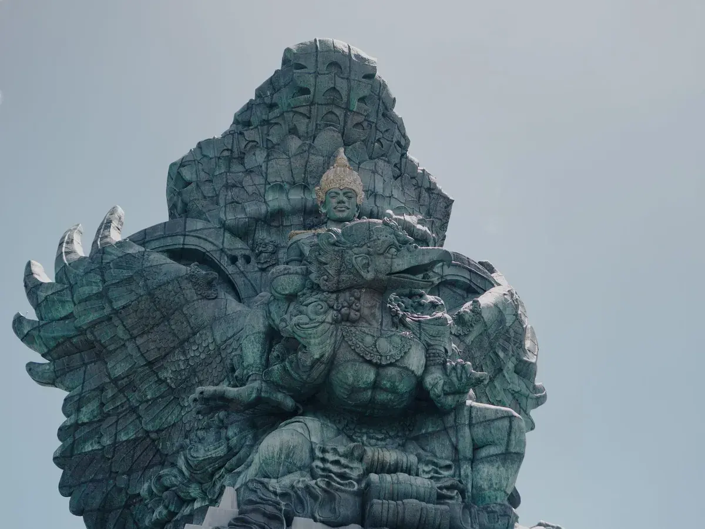
DenpasarDenpasar ist die Hauptstadt und grösste Stadt der Insel, Regierungssitz seit 1958, mit rund 670.000 Einwohnern. Wikivoyage beschreibt sie als lebhaft, multikulturell und weniger touristisch, mit schwüler Luft und Abgasen. Das Museum Bali wurde 1931 gegründet und zeigt Masken, Skulpturen, Textilien und Archäologie. Im Renon-Platz stehen das Bajra-Sandhi-Monument und ein Museum.
Garuda Wisnu KencanaDer Kulturpark bei Ungasan auf der Bukit-Halbinsel hat eine 75 Meter hohe Statue von Vishnu auf dem Vogel Garuda, mit Sockel rund 121 Meter. Sie wurde 2018 fertiggestellt. Der Park liegt auf 263 Metern Höhe und dient auch für Konzerte. Der Standardeintritt liegt laut offizieller Ticketseite bei 150.000 IDR, ob das für Ausländer gilt, steht dort nicht.
TippsFür das Museum Bali haben wir nur alte Angaben zu Eintritt und Öffnungszeiten, prüf sie vor dem Besuch. Denpasar eignet sich als Tagesausflug für alle, die Kultur ohne Touristenkulisse suchen.
AnfahrtAb Flughafen rund 17 Minuten nach Denpasar und rund 20 Minuten zum GWK (Richtwert, ohne Verkehr).
Quellen: Wikipedia: Denpasar; Wikipedia: Museum Bali; Wikipedia: GWK; GWK Tickets
Ubud ist das kulturelle Zentrum der Insel und einer der meistbesuchten Orte. Rundherum liegen die bekanntesten Tempel und Terrassen.
Kunst, Tanz und Hügel, dafür mit viel Betrieb.
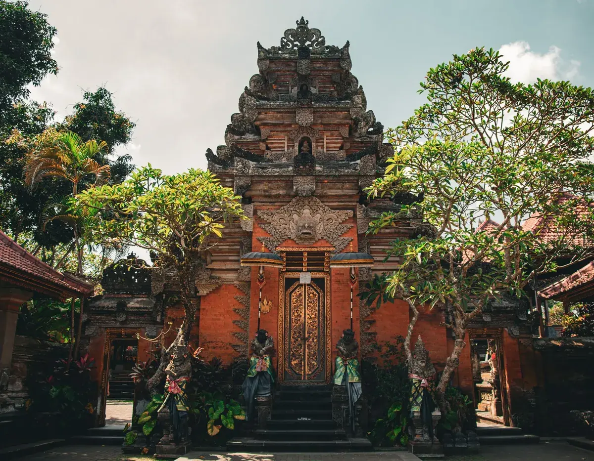
Worum es gehtUbud liegt in den Hügeln von Gianyar und ist bekannt für Kunstmuseen, Handwerk und Tanzvorstellungen. Es gibt das Writers and Readers Festival, im April das Food Festival und Museen wie das Neka, das Puri Lukisan und das Agung Rai. Im Hof des Königspalasts Puri Saren Agung finden Tanzabende statt.
Was dich erwartetUbud gehört zu den am stärksten besuchten Gebieten der Insel. Lonely Planet schreibt im August 2026, dass Cafés an den Reisfeldern grosse Menschenmengen anziehen. Der Tanzabend im Palast kostet laut einem Reiseblog 100.000 IDR und beginnt täglich um 19:30 Uhr (Stand Januar 2026).
Campuhan Ridge WalkEin Spazierweg auf einem Höhenrücken am Rand von Ubud, laut Reiseblog rund 2 Kilometer pro Richtung. Er kostet keinen Eintritt. Geh früh am Morgen, mittags gibt es keinen Schatten.
TippsPlan die Fahrt vom Flughafen grosszügig: Lonely Planet nennt als Beispiel, dass eine zweistündige Fahrt im Verkehr vier Stunden dauern kann. Wikivoyage warnt vor Kopi-Luwak-Touristenfallen und empfiehlt stattdessen das Seniman Coffee Studio.
AnfahrtAb Flughafen rund 36 Minuten ohne Verkehr (Richtwert).
Quellen: Wikipedia: Ubud; Lonely Planet; Reiseblog: Tanzabend; Reiseblog: Campuhan; Wikivoyage: Bali
Ein kleiner Wald mitten in der Stadt, voller Makaken.
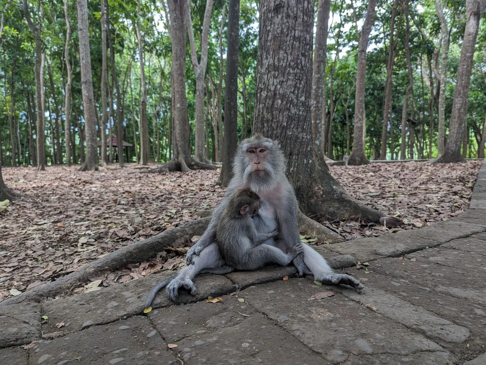
Worum es gehtRund 10 Hektar Waldschutzgebiet mit mindestens 115 Baumarten, drei Tempeln aus der Zeit um 1350 und etwa 1.260 Makaken (Stand 2023). Das Gebiet gehört zum Dorf Padangtegal.
Was dich erwartetDie Affen haben die Scheu verloren und greifen nach Taschen mit Essen. Es kommt zu Bissvorfällen. Der Eintritt beträgt laut der offiziellen Seite 130.000 IDR für Erwachsene und 100.000 IDR für Kinder, geöffnet ist täglich von 9 bis 18 Uhr, letzter Einlass 17 Uhr.
TippsTrag kein offenes Essen mit dir, fass die Tiere nicht an und füttere sie nicht. Bei einem Biss oder Kratzer geh sofort zum Arzt, in Indonesien besteht Tollwutgefahr.
Quellen: Offizielle Seite; Wikipedia: Monkey Forest; Smartraveller
Die berühmtesten Terrassen der Insel, und die am meisten kritisierten.
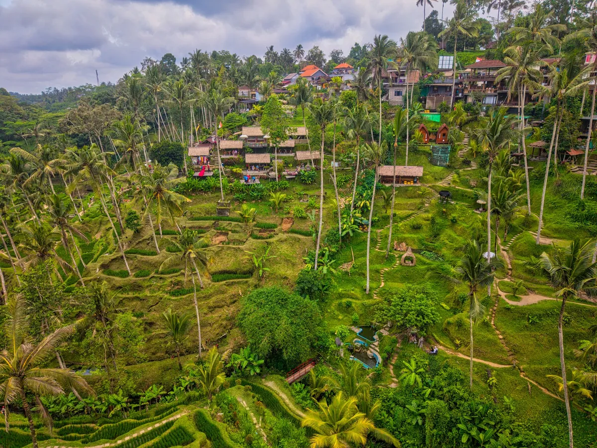
Worum es gehtDie Terrassenfelder nördlich von Ubud sind mit Schaukeln, Cafés und Aussichtspunkten für Fotos hergerichtet. Lonely Planet nennt den Ort einen virtuellen Freizeitpark, in dem Menschen für Fotos drängeln.
Was dich erwartetEs gibt kein einheitliches Ticket. Entlang der Wege stehen Spendenstellen der Grundbesitzer, laut einem Reiseblog rund 15.000 bis 20.000 IDR. Für die Schaukeln werden meist 150.000 bis 400.000 IDR verlangt, die Angaben schwanken. Wiederholte Spendenforderungen sind laut diesem Blog eine häufige Beschwerde.
TippsKomm früh, zwischen 6 und 8:30 Uhr. Reisebusse sind laut Blog etwa zwischen 9 und 15 Uhr da, der Parkplatz ist vormittags voll. Bring Bargeld.
AnfahrtAb Flughafen rund 45 Minuten, von Ubud rund 11 Minuten (Richtwert, ohne Verkehr).
Quellen: Lonely Planet; Reiseblog
Der Quelltempel, an dem Besucher am Reinigungsritual teilnehmen.
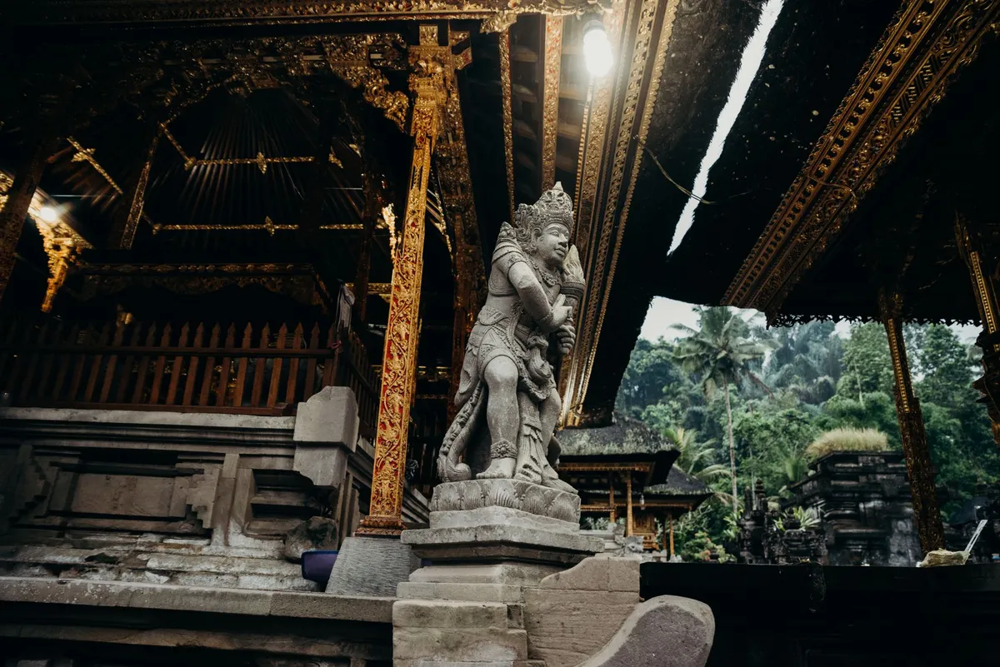
Worum es gehtDer Tempel bei Tampaksiring wurde laut Überlieferung 962 n. Chr. gegründet. Er liegt an einer Quelle des Flusses Pakerisan, und 1954 wurde hier eine Villa für Sukarno gebaut. Gläubige und Besucher steigen für das Reinigungsritual Melukat in die Becken.
Was dich erwartetDer Tempel ist stark besucht. Sarong und Schärpe sind Pflicht und meist leihbar. Für das Ritual brauchst du laut einem Reiseblog einen eigenen Badesarong. Der Eintritt wird mit 50.000 bis 75.000 IDR angegeben, die Quellen stammen aus verschiedenen Jahren.
TippsKomm vor 10 Uhr oder nach 16 Uhr, dann ist es laut Blog ruhiger. Prüf die Preistafel vor Ort.
AnfahrtAb Flughafen rund 47 Minuten, von Ubud rund 16 Minuten (Richtwert, ohne Verkehr).
Quellen: Wikipedia: Tirta Empul; Reiseblog
Eine Höhle mit Dämonengesicht und ein Wasserfall zum Treppensteigen.
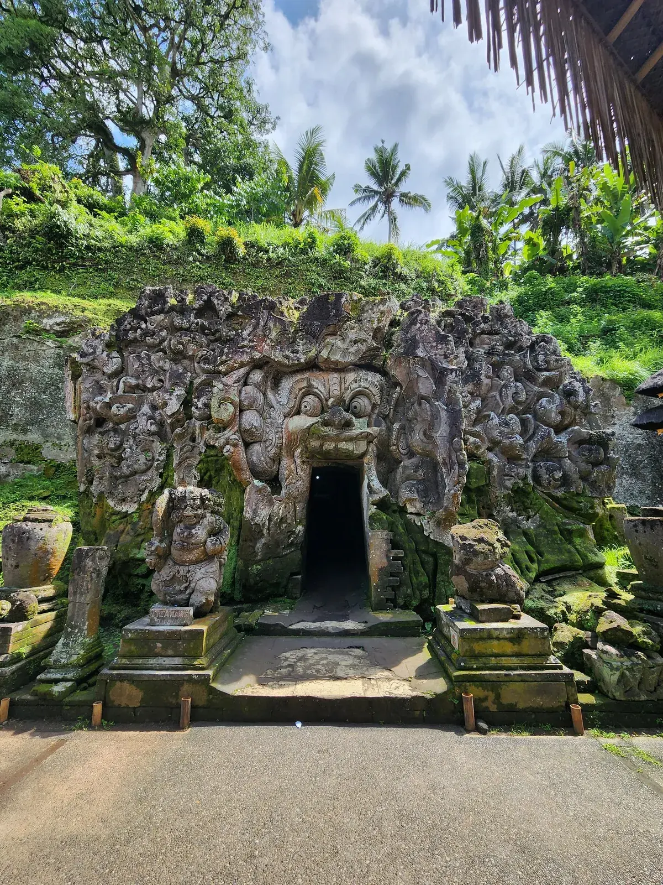
Goa GajahDie Elefantenhöhle ist ein Heiligtum mit einem geschnitzten Dämonengesicht am Eingang, einem Badebecken und Reliefs. Sie wurde 1923 von niederländischen Archäologen wiederentdeckt, wann sie entstand, ist unklar. Wer Shorts trägt, bekommt einen Sarong. Der Eintritt liegt laut einem Reiseblog bei 50.000 IDR (Stand Oktober 2026), in der Regel reicht eine Stunde bis anderthalb Stunden.
TegenunganDer Wasserfall liegt am Fluss Petanu im Dorf Kemenuh und ist über Treppen erreichbar, laut Blog rund 200 Stufen. In der Regenzeit von November bis März sind sie rutschig, die Trockenzeit von April bis Oktober ist die beste Zeit. Der Eintritt liegt laut Blog bei 30.000 IDR. Am ruhigsten ist es vor 9 Uhr, zwischen 11 und 15 Uhr ist es voll.
TippsSchwimm nur, wenn die Bedingungen sicher sind. Beide Orte lassen sich gut mit Ubud kombinieren.
AnfahrtAb Flughafen rund 34 Minuten zur Höhle und rund 35 Minuten zum Wasserfall (Richtwert, ohne Verkehr). Von Ubud sind es 3 und 11 Minuten ohne Verkehr, real länger.
Quellen: Wikipedia: Goa Gajah; Wikipedia: Tegenungan; Reiseblog Goa Gajah; Reiseblog Tegenungan
Der Osten ist ruhiger und trockener als der Südwesten. Wer zu den berühmten Tempeln will, muss früh los. Lonely Planet nennt Amed und Tulamben als ruhigere Ziele gegen den Overtourism.
Ein ruhiges Tal mit Blick auf den Mount Agung.
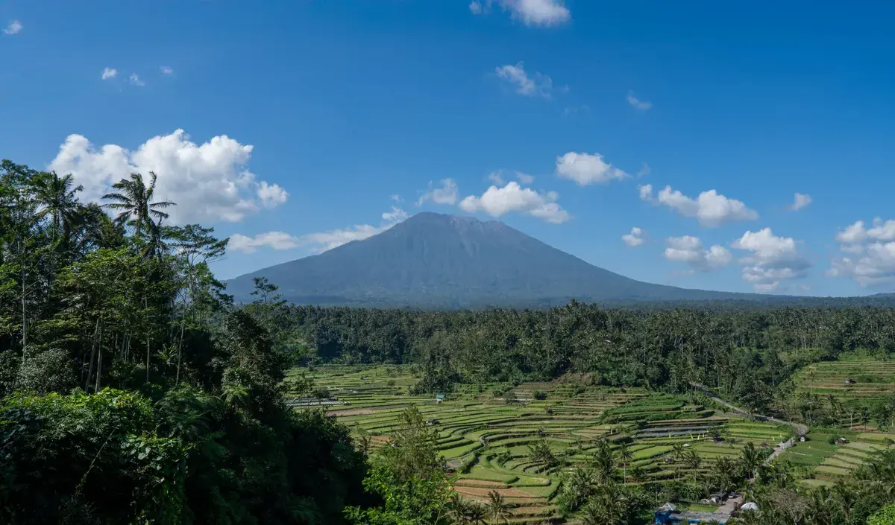
Worum es gehtSidemen ist ein Tal in Karangasem mit Reisterrassen und Blick auf den Mount Agung. Es gilt als ruhige Alternative zu Ubud. Wir haben dazu nur eine Reiseblog-Quelle gefunden, mehr als diesen Überblick behaupten wir deshalb nicht.
Was du tun kannstLaut dem Blog: durch die Terrassen spazieren, zum Wasserfall, Rafting, Weberei- und Silber-Workshops und Kochkurse.
AnfahrtAb Flughafen rund 55 Minuten ohne Verkehr (Richtwert). Der Blog nennt rund 2 Stunden ab Flughafen.
Quellen: Reiseblog
Der grösste und heiligste Tempelkomplex der Insel.
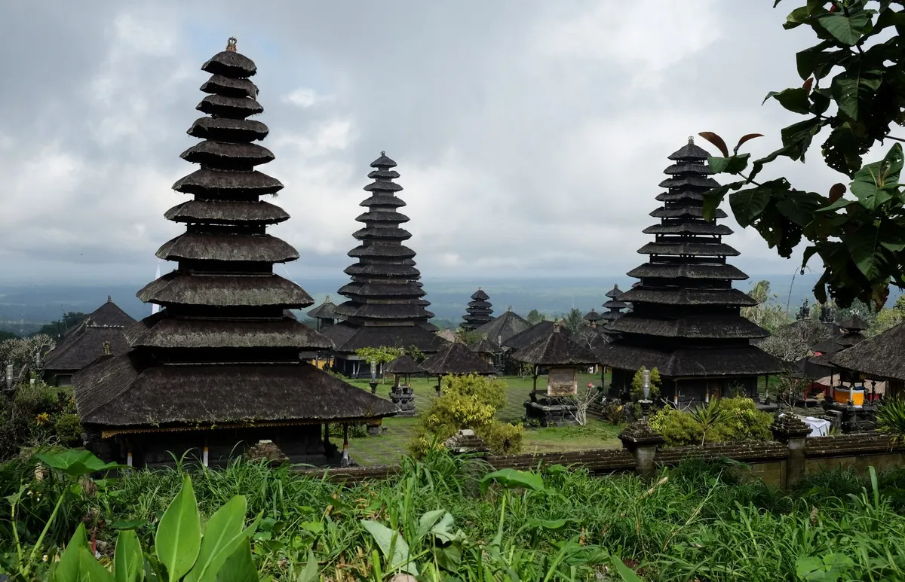
Worum es gehtBesakih liegt am Hang des Mount Agung auf rund 1.000 Metern und besteht aus 23 Tempeln auf sechs Terrassen. Es gilt als bedeutendster Tempel des balinesischen Hinduismus. Das Hauptheiligtum ist der Pura Penataran Agung.
Was dich erwartetSarong und Schärpe sind Pflicht. Wikipedia beschreibt illegale Zusatzforderungen von Jugendlichen der Umgebung nach dem offiziellen Ticket, angeblich für Reinigung oder Führungen. Lehn sie ab. Der Eintritt wird mit 60.000 bis 150.000 IDR angegeben, die Quellen widersprechen sich stark.
TippsKomm früh, laut Reiseblog ist es zwischen 7 und 8 Uhr am leersten, ab etwa 10 Uhr kommt der Andrang. Die Trockenzeit von April bis Oktober ist am angenehmsten.
AnfahrtAb Flughafen rund 56 Minuten ohne Verkehr (Richtwert). Der Blog rechnet mit mindestens 90 Minuten.
Quellen: Wikipedia: Pura Besakih; Reiseblog; Gouverneurs-Rundschreiben
Das berühmteste Foto der Insel, mit langer Warteschlange.
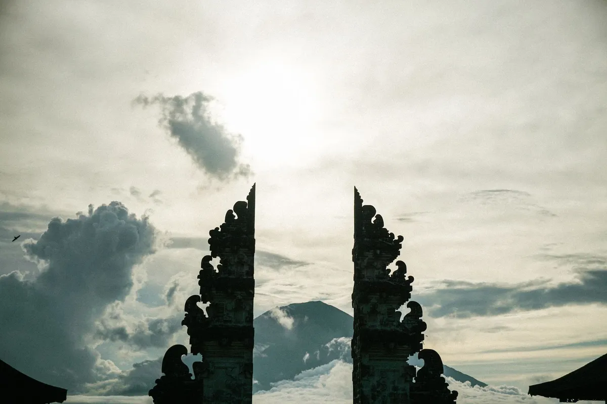
Worum es gehtDer Tempel am Berg Lempuyang gehört zu den neun Richtungstempeln. Weltbekannt ist das gespaltene Tor des unteren Tempels Penataran Agung, durch das du den Mount Agung siehst. Der höchste Tempel liegt auf rund 1.060 Metern.
Was dich erwartetLonely Planet bestätigt stundenlanges Anstehen für das Foto. Ein Reiseblog nennt für März 2026 zwei bis vier Stunden Wartezeit, ein nummeriertes Ticket und einen Pflicht-Shuttle. Das Spiegelbild im Foto entsteht laut Blog mit einem Spiegel, nicht mit Wasser.
TippsPlan einen halben Tag ein und komm früh. Der erste Shuttle fährt laut Blog gegen 5:30 Uhr. Der Eintritt wurde früher mit 100.000 IDR angegeben, dazu kommen Shuttle, Parkplatz und Trinkgeld für den Fotografen, bring Bargeld.
AnfahrtAb Flughafen rund 78 Minuten ohne Verkehr (Richtwert), real eher mehr. Ein Blog nennt 2,5 bis 3 Stunden ab Ubud.
Quellen: Wikipedia: Lempuyang; Lonely Planet; Reiseblog
Ein Wasserpalast und ein ruhiger Küstenort.
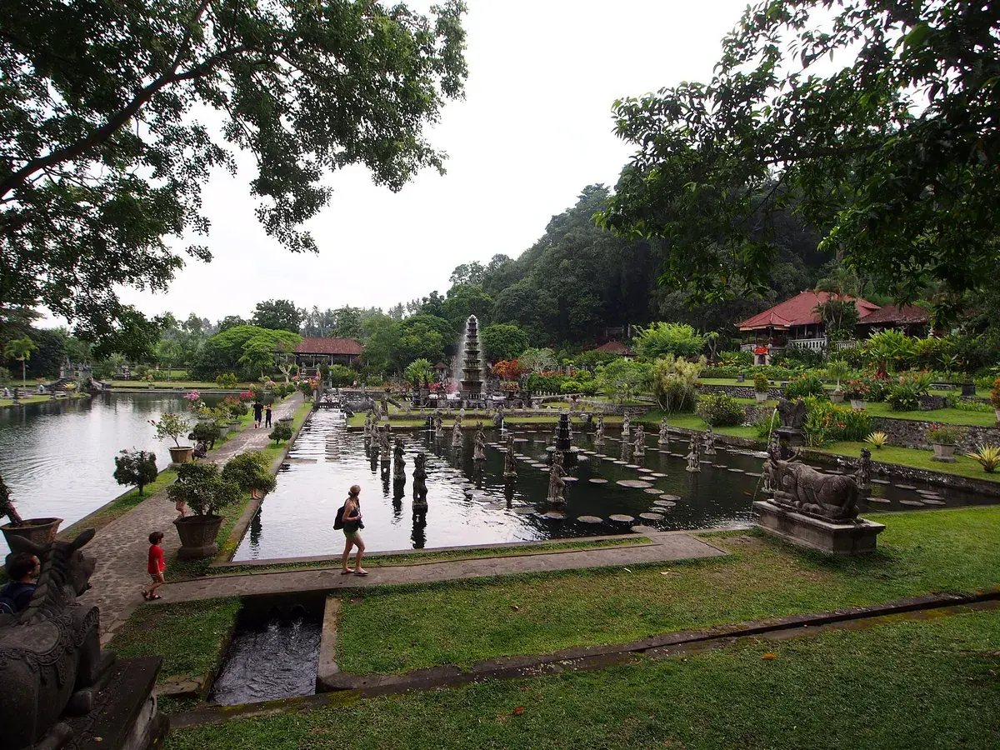
Tirta GanggaDer ehemalige königliche Wasserpalast bei Ababi, rund 7 Kilometer nördlich von Amlapura, wurde ab 1946 vom letzten König von Karangasem gebaut. Beim Ausbruch des Agung 1963 wurde er fast vollständig zerstört und später wieder aufgebaut. Ein Reiseblog nennt 90.000 IDR Eintritt (Stand Oktober 2026) und empfiehlt den Morgen zwischen 8 und 10 Uhr.
CandidasaDer Küstenort liegt an einer Lagune und ist laut Wikipedia gut als Basis für Padang Bai, Tenganan, Tirta Gangga und Lempuyang. Der Strand ist erodiert, seit in den 1970er und 80er Jahren Riffe für Kalk abgebaut wurden. Tauchboote starten in Padang Bai, rund 11 Kilometer westlich, weil Candidasa keinen Pier hat.
AnfahrtAb Flughafen rund 66 Minuten nach Tirta Gangga und rund 53 Minuten nach Candidasa (Richtwert, ohne Verkehr).
Quellen: Wikipedia: Tirta Gangga; Wikipedia: Candidasa; Reiseblog
Tauchen und Schnorcheln direkt ab Strand, ohne grosse Menschenmengen.
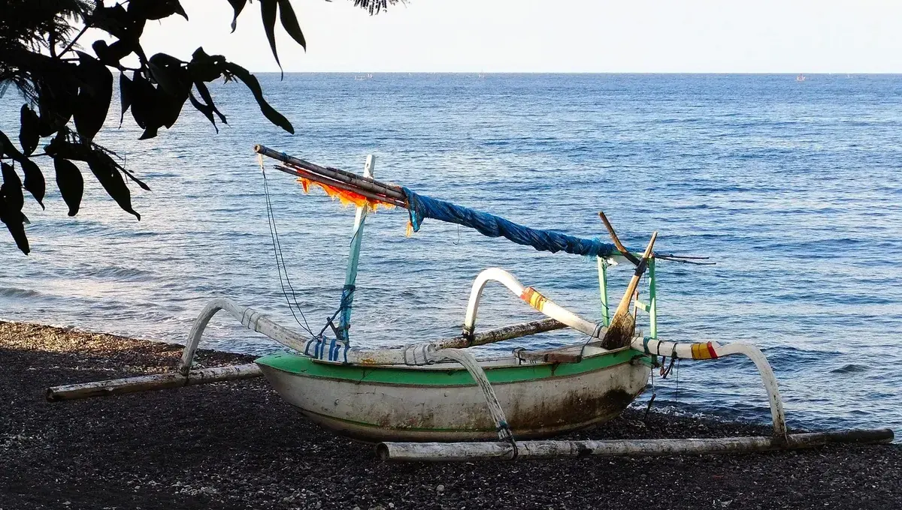
AmedAmed ist keine einzelne Ortschaft, sondern eine lange Küstenzone aus Dörfern im äussersten Osten. Die Strände haben dunklen Vulkansand. Laut einem Reiseblog liegen die Korallen nah am Ufer, du kannst direkt vom Strand schnorcheln und tauchen.
TulambenDas Fischerdorf an der Nordostküste hat einen steinigen Strand. Vor dem Ufer liegt das Wrack der USAT Liberty, ein US-Frachter, der am 11. Januar 1942 torpediert wurde und 1963 beim Ausbruch des Agung ins Wasser rutschte. Das Wrack ist 125 Meter lang und liegt in 5 bis 30 Metern Tiefe, es gehört zu den beliebtesten Tauchplätzen Balis. Die Quellen nennen 25 bis 40 Meter Abstand zum Ufer.
TippsIn der Hochsaison tauchen bis zu 100 Taucher pro Tag am Wrack. Die beste Zeit ist laut Wikipedia im Oktober und November, wenn das Wetter ruhig ist. Ein Tauchgang kostet laut einem Anbieter-Portal rund 400.000 bis 800.000 IDR, das ist eine Richtgrösse.
AnfahrtAb Flughafen rund 79 Minuten nach Amed und 81 Minuten nach Tulamben (Richtwert, ohne Verkehr). Blogs nennen rund 3 Stunden.
Quellen: Wikipedia: Tulamben; Wikipedia: USAT Liberty; Lonely Planet; Reiseblog: Amed; Bali Tourist
Weitere Strecken, kühleres Klima, kurvige Bergstrassen. Plan für die Fahrten mehr Zeit ein als das Navi sagt, die Zeiten unten sind ohne Verkehr gerechnet.
Der Sonnenaufgangs-Trek auf einen aktiven Vulkan.
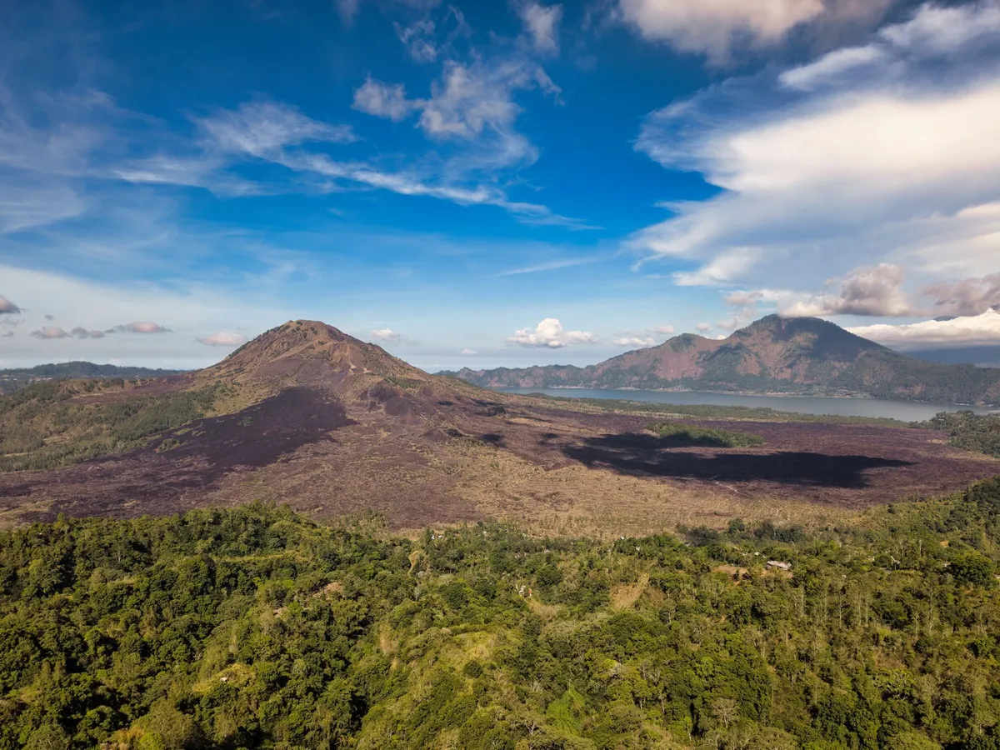
Worum es gehtDer Batur ist ein aktiver Vulkan, 1.717 Meter hoch, mit zwei ineinanderliegenden Calderen. Er gehört seit 2012 zum UNESCO Global Geopark. Der Trek zum Sonnenaufgang ist einer der beliebtesten Ausflüge der Insel.
Was dich erwartetTreks starten laut Anbieter gegen 4 Uhr, den Gipfel erreichst du gegen 6 Uhr. Ein Blog rechnet mit rund 2 Stunden Aufstieg und insgesamt 4 bis 5 Stunden.
TippsDas Rundschreiben des Gouverneurs 7/2025 verlangt, dass Ausländer Attraktionen mit lizenzierten Guides besuchen. Ob und wie das am Batur durchgesetzt wird, haben wir nicht eindeutig belegt, frag den Anbieter. Am 11. August 2026 brannten rund 2 Hektar Schutzwald am Batur, vermutlich durch eine Zigarette. Rauchen, Feuer und Müll auf dem Pfad sind verboten.
Gut zu wissenSmartraveller warnt, dass sich die Aktivität von Agung und Batur ohne Vorwarnung ändern kann. Für den Agung ist ein registrierter Guide Pflicht, ein Norweger wurde im Februar 2025 nach einer Alleinbesteigung ausgewiesen.
AnfahrtAb Flughafen rund 64 Minuten bis zum Dorf Kintamani (Richtwert). Die Startpunkte liegen im Krater.
Quellen: Wikipedia: Mount Batur; bali.live: Waldbrand; Reiseblog; Smartraveller
Ein Tempel am Bergsee, auf 1.500 Metern.
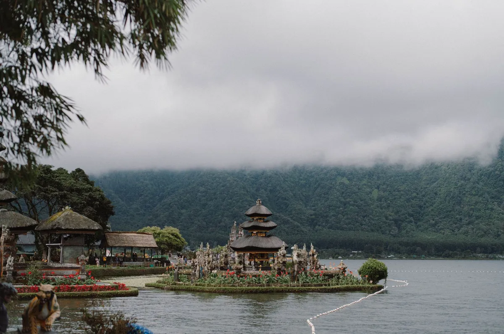
Worum es gehtBedugul ist ein Bergseegebiet mit drei Kraterseen, Bratan, Buyan und Tamblingan. Der Tempel am Ufer des Bratan-Sees wurde 1633 erbaut und ist der Seegöttin Dewi Danu gewidmet. Sein 11-stöckiger Schrein gehört zu den bekanntesten Motiven der Insel.
Was dich erwartetAuf rund 1.500 Metern ist es kühl. Zum Gelände gehört auch der Botanische Garten von Bali, gegründet 1959. Der Eintritt zum Tempel lag laut Reiseblog 2025 bei 75.000 IDR, ob das 2026 noch gilt, ist unsicher.
TippsPack einen Pulli ein. Am ruhigsten ist es zwischen 7 und 8 Uhr. Besucher betreten laut Quelle die Gebetsbereiche nicht, bescheidene Kleidung wird erwartet, Sarongs gibt es am Eingang.
AnfahrtAb Flughafen rund 53 Minuten ohne Verkehr (Richtwert). Ein Blog rechnet ab Ubud oder Seminyak mit 2 bis 3 Stunden.
Quellen: Wikipedia: Bedugul; Wikipedia: Ulun Danu Bratan; Reiseblog
UNESCO-Reisterrassen und ein Waldtempel am Berg.
JatiluwihWeite Reisterrassen im Hochland von Tabanan. Das Subak-Bewässerungssystem ist seit 2012 UNESCO-Welterbe, Jatiluwih eines von fünf Gebieten. Du kannst spazieren, Rad oder E-Bike fahren. Die Wanderung durch die geschützte Zone dauert laut Wikipedia rund 3,5 Stunden, die E-Bike-Tour rund 1 Stunde. Der Eintritt beträgt laut einem Reiseblog 100.000 IDR (Stand 2026, nur eine Quelle).
Pura Luhur BatukaruDer Tempel am Südhang des Mount Batukaru ist einer der sechs wichtigsten Tempel der Insel, im 11. Jahrhundert gebaut, 1959 wiederaufgebaut, mit einem siebenstöckigen Meru. Er ist ruhiger und waldiger als die Küstentempel. Laut einem Reiseportal ist er kostenlos mit Spende, Sarong und Schärpe kosten rund 20.000 bis 40.000 IDR zum Mieten.
TippsGrab und Gojek sind in Jatiluwih laut Blog kaum verfügbar, du brauchst einen Fahrer oder Roller. Nimm Bargeld und feste Schuhe mit, die Wege werden matschig. Für Drohnen kann eine Genehmigung nötig sein.
AnfahrtAb Flughafen rund 61 Minuten zu beiden Zielen (Richtwert, ohne Verkehr).
Quellen: Wikipedia: Jatiluwih; Wikipedia: Batukaru; Reiseblog
Wasserfälle im Hinterland des Nordens.
MundukEin kühles Bergdorf mit Wäldern, Seen und mehreren Wasserfällen, gut für kurze Wanderungen. In der Nähe liegen die Seen Buyan und Tamblingan, die Wasserfälle Munduk und Banyumala und weitere Ziele wie Melanting und Golden Valley.
SekumpulEine Gruppe hoher Wasserfälle in Buleleng, oft als die schönsten der Insel genannt. Der Weg dauert laut einem Reiseblog 30 bis 40 Minuten pro Richtung, mit Treppen und flachen Flussquerungen, du wirst nass. Guides werden oft angeboten oder aufgedrängt, eine Pflicht haben wir nicht belegt gefunden. Die Eintrittspreise widersprechen sich zwischen den Quellen stark.
GitgitDer leicht erreichbare Wasserfall an der Hauptstrasse nach Norden. Der Weg dauert rund 15 Minuten, ist asphaltiert und gesäumt von Souvenirständen. Der Eintritt wird mit 150.000 IDR angegeben, das wirkt hoch und passt nicht zu anderen Quellen.
TippsStarte früh, die Fahrt aus dem Süden vor 9 Uhr wird wegen Verkehr und Andrang empfohlen. In der Regenzeit sind die Wege rutschig und Flüsse steigen schnell. Auf den Bergstrassen fehlt teils der Handyempfang, lad eine Offline-Karte.
AnfahrtAb Flughafen rund 76 Minuten nach Munduk, 75 nach Sekumpul und 63 nach Gitgit (Richtwert, ohne Verkehr).
Quellen: Reiseblog Munduk; Reiseblog Wasserfälle; Reiseblog Sekumpul
Ruhige Nordküste, mit einem kritischen Blick auf die Delfintouren.
Worum es gehtLovina ist ein ruhiger Küstenstreifen im Norden mit dunklem Vulkansand und Riffen. Bekannt ist er für Delfin-Bootstouren am Morgen. Das nahe Singaraja war von 1849 bis 1960 Hauptstadt von Bali und gilt als Bildungsstadt, mit der Bibliothek Gedong Kirtya, die Lontar-Manuskripte bewahrt.
Die DelfintourenDie Touren starten laut Blog zwischen 5 und 9 Uhr. Die Kritik daran ist belegt: Eine Studie der James Cook University zählte bis zu 179 Boote und bis zu 83 Boote um eine einzelne Delfingruppe. Viele hielten den empfohlenen Abstand von 50 Metern nicht ein, die Autoren nannten die Nachhaltigkeit fraglich. Die Daten stammen von 2011.
TippsWenn du fährst, meide Wochenenden und die Hochsaison und wähl kleine lokale Anbieter. Weitere Ziele in der Nähe sind Schnorchelriffe, heisse Quellen und die Wasserfälle Gitgit, Aling-Aling und Sing-Sing.
AnfahrtAb Flughafen rund 80 Minuten nach Lovina und 73 Minuten nach Singaraja (Richtwert, ohne Verkehr). Ein Blog rechnet aus dem Süden mit 2 bis 3 Stunden über Bergstrassen.
Quellen: Wikipedia: Singaraja; James Cook University; Reiseblog
Der Nordwesten für Taucher und Naturfans.
Worum es gehtPemuteran ist ein ruhiges Dorf im Nordwesten und Ausgangspunkt für Tauch- und Schnorchelausflüge nach Menjangan. Die Insel gehört zum Bali-Barat-Nationalpark, dem einzigen grösseren Nationalpark der Insel mit rund 190 Quadratkilometern. Dort lebt der seltene Bali-Star, ausserdem Banteng, Rusa-Hirsche und Leopardkatzen. Im Meeresgebiet gibt es über 110 Korallenarten.
Was dich erwartetZum Tauchen liegen Plätze wie Eel Garden, Bat Cave, Coral Garden und Dream Wall an der Insel. Laut einem Blog ist das Tauchen dort anspruchsvoller, empfohlen wird mindestens PADI Advanced. Schnorcheln kann jeder.
TippsDie beste Zeit ist laut den Quellen von Mitte Juni bis Anfang November. In der Regenzeit ist das Wasser teils trüb. Der Eintritt zum Nationalpark liegt laut einem Reiseblog bei 200.000 IDR werktags und 300.000 IDR am Wochenende, plus Boot und Permits (Stand Februar 2026). Bezahlt wird nur an den Parkbüros in Cekik und Labuan Lalang. Roller sind wegen der schlechten Strassen nicht empfohlen, und an Nyepi ist der Park geschlossen.
AnfahrtAb Flughafen rund 110 bis 113 Minuten ohne Verkehr (Richtwert). Das ist die weiteste Fahrt in diesem Guide, plan eine Übernachtung ein.
Quellen: Wikipedia: West Bali National Park; Reiseblog Nationalpark; Reiseblog Tauchen
Eine lange Welle im Westen und der Fährhafen nach Java.
MedewiEin ruhiger Surfort an der Westküste mit einer langen Linkswelle von bis zu etwa 400 Metern. Laut einem Surfcamp-Blog ist sie eher für Erfahrene, der Grund ist felsig, bei grossem Swell gibt es Strömung und gelegentlich Seeigel, Schuhe für die Felsen helfen. Die Saison ist die Trockenzeit von April bis Oktober, im Juli und August ist es am vollsten.
GilimanukDer Fährhafen ganz im Westen. Von hier setzt du nach Ketapang bei Banyuwangi in Ost-Java über. Laut Wikivoyage fährt die Fähre etwa alle 20 Minuten rund um die Uhr, die Überfahrt dauert rund 30 Minuten, Be- und Entladen kann deutlich länger dauern.
TippsFähren in Indonesien erfüllen laut Smartraveller teils keine internationalen Sicherheitsstandards. Reise nicht bei Dunkelheit oder Unwetter.
AnfahrtAb Flughafen rund 73 Minuten nach Medewi und 103 Minuten nach Gilimanuk (Richtwert, ohne Verkehr). Der Surfcamp-Blog nennt rund 3 Stunden nach Medewi, rechne eher mit mehr.
Quellen: Surfcamp-Blog; Wikivoyage: Gilimanuk; Smartraveller
Nusa Penida, Nusa Lembongan und Nusa Ceningan liegen südöstlich von Bali. Die Schnellboote fahren vor allem ab Sanur.
Die grösste der drei Inseln, mit spektakulären und gefährlichen Klippen.
Worum es gehtDie Insel ist rund 203 Quadratkilometer gross, hat etwa 65.000 Einwohner und ist trockener als Bali. Die bekanntesten Fotospots sind Kelingking, Broken Beach, Angel Billabong, Diamond Beach und Crystal Bay.
Neu seit Sommer 2026Auf Penida gilt ein neues Eintrittssystem: 25.000 IDR pro Attraktion für Erwachsene, 15.000 IDR für Kinder, bargeldlos. Ausländer zahlen laut bali.live zusätzlich eine einmalige Inselgebühr, deren Höhe wir nicht gefunden haben. Das Startdatum wird in den Berichten mit 12. August oder 1. September 2026 angegeben. Am ersten Tag kam es zu Staus, Vorab-Tickets mit QR-Code werden empfohlen.
SicherheitAm Kelingking Beach stürzte am 12. September 2026 eine 29-jährige Australierin rund 80 Meter ab, als sie einen eigenen Weg zum Klippenrand suchte. Im Oktober 2025 ertrank dort eine Französin in starker Strömung. Baden an Kelingking, Diamond Beach und Angel Billabong ist laut einem Rundschreiben des Bupati von Klungkung verboten. Bleib auf den Wegen.
StrassenDie Strassen sind laut einem lokalen Medium schmal, kurvig und steil, bei Regen rutschig, es gibt wenige Tankstellen. Smartraveller warnt vor Rollerunfällen, Helm und passender Führerschein sind Pflicht. Ob du mit einem Fahrer besser fährst, ist unsere Einschätzung, nicht belegt.
MantasDer Manta Point ist laut PADI Travel der einzige Ort der Insel mit regelmässigen Manta-Sichtungen. Hochbetrieb ist von Juli bis September, Mola Mola gibt es am ehesten von Juli bis Oktober.
AnreiseSchnellboote ab Sanur brauchen je nach Hafen und Anbieter 30 Minuten bis 1 Stunde 15 Minuten, ab rund 10 Euro (Fährportal, nur Richtwert). Die staatliche Fähre ab Padang Bai soll seit dem 30. Juli 2026 ausser Betrieb sein, ob das noch gilt, ist unklar. Eine offizielle Fahrplanquelle haben wir nicht gefunden.
Quellen: Wikipedia: Nusa Penida; bali.live: Eintritt; The Star; PADI Travel; Smartraveller
Kleine Inseln, Roller statt Autos.
LembonganLembongan ist die am besten erschlossene der drei Inseln, rund 8 Quadratkilometer gross mit etwa 5.000 Einwohnern, 12 Kilometer von Bali entfernt. Es gibt ein Dorf, Strände und Mangroven auf rund 212 Hektar im Nordosten, Algen werden wieder angebaut. Man fährt meist Roller oder geht zu Fuss, Autos sind selten. Das Schnellboot ab Sanur braucht laut Wikipedia rund 30 Minuten.
CeninganDie kleinste und ruhigste Insel liegt zwischen Lembongan und Penida. Von Lembongan erreichst du sie über die Gelbe Brücke, eine Hängebrücke nur für Fussgänger und Roller. Sie wurde 2017 eröffnet und ersetzte eine Holzbrücke, die 2016 bei einer Prozession einstürzte, acht Menschen starben.
TippsDevil's Tear ist laut einem Blog gefährlich, halte Abstand zum spritzenden Wasser. Der Ort gehört zum neuen Eintrittssystem. Smartraveller weist darauf hin, dass Schwimmwesten auf Booten oft knapp sind, fahr nicht bei Dunkelheit, Regen oder Sturm.
Quellen: Wikipedia: Nusa Lembongan; Wikipedia: Nusa Ceningan; Reiseblog; Smartraveller
Die Fotos zu Kuta, Sanur und Padang Bai haben wir selbst aufgenommen. Die Fotos zu den Orten im Abschnitt Ganz Bali stammen von Pexels oder Wikimedia Commons und stehen unter freien Lizenzen. Wo die Lizenz eine Nennung verlangt, steht sie hier:
Eine Strecke sind wir selbst gefahren, von Kuta nach Gili Air. Der Rest sind Quellen mit Stand, keine eigenen Zahlen.
Der Flughafen Ngurah Rai liegt in Tuban im Bezirk Kuta, rund 13 Kilometer südlich von Denpasar. 2024 zählte er laut Wikipedia knapp 24 Millionen Passagiere. Wir sind am 11. August von hier weitergeflogen.
Am 6. Juli sind wir mit Van und Schnellboot von Kuta nach Gili Air gefahren, gebucht über ein Buchungsportal. Abholung war um 10 Uhr bei einem Treffpunkt in Kuta, die Ankunft auf Gili Air stand für 15:15 Uhr im Ticket, die Dauer mit 4 Stunden 15 Minuten. Die Hafengebühr von 30.000 IDR (rund 1.40 CHF) pro Person war nicht im Ticket enthalten.
Mehr zur Insel findest du in unserem Gili-Air-Guide.
Die langsame Fähre fährt von Padang Bai nach Lembar, rund um die Uhr. Laut JawaPos braucht sie im Schnitt etwa 4 Stunden 30 Minuten für rund 38 Seemeilen. Für den 14. Juli 2026 nennt die Zeitung sieben Abfahrten zwischen 6:30 und 18:00 Uhr. Schnellboote fahren laut einem Fährportal von Padang Bai nach Senggigi, ab rund 1 Stunde 15 Minuten und ab etwa 17 Euro. Mehr dazu im Lombok-Guide.
Quellen: Wikipedia (Flughafen Ngurah Rai), JawaPos (14. Juli 2026), ein Fährportal (Stand Oktober 2026) und unser eigenes Ticket. Fahrpläne und Preise vor der Abreise prüfen.
Ein Tagesbudget nennen wir nicht, das wäre geraten. Dafür gibt es hier Einzelpreise, jeweils mit Stand. Kurs: 1 CHF entspricht rund 21.500 IDR (Stand 8. Oktober 2026).
| Ausgabe | Einordnung | Richtwert |
|---|---|---|
| Visum bei Ankunft | 30 Tage, einmal verlängerbar | 500.000 IDR (rund 23 CHF) |
| Touristenabgabe Bali | Pro Person, einmal pro Besuch, vorab online | 150.000 IDR (rund 7 CHF) |
| Hafengebühr Padang Bai | Pro Person, bei unserem Ticket nicht enthalten | 30.000 IDR (rund 1.40 CHF) |
| Langsame Fähre Padang Bai nach Lembar | Pro Person, Tarif Ende 2025 | rund 65.000 IDR (rund 3 CHF) |
| Einfaches Essen im Restaurant | Denpasar, Numbeo, Stand 8. Oktober 2026 | rund 35.000 IDR (rund 1.60 CHF) |
| Cappuccino | Denpasar, Numbeo, Stand 8. Oktober 2026 | rund 28.400 IDR (rund 1.30 CHF) |
| Wasser, 1.5 Liter | Denpasar, Numbeo, Stand 8. Oktober 2026 | rund 6.800 IDR (rund 0.30 CHF) |
| Taxi, Grundpreis | Denpasar, Numbeo, Stand 8. Oktober 2026 | rund 15.000 IDR (rund 0.70 CHF) |
Zum Visum: Die Behörde hat am 12. August 2026 laut Medienberichten höhere Gebühren angekündigt, 750.000 IDR online und 1.000.000 IDR bei Ankunft. Nach Stand von Mitte August 2026 war das ein Vorschlag, ein Datum für das Inkrafttreten war nicht genannt. Bis Anfang Oktober haben wir keine Bestätigung dafür gefunden. Schau den aktuellen Betrag im offiziellen e-Visa-Portal. Die Preise für Essen und Taxi stammen aus Nutzerangaben für Denpasar, nicht für Kuta. In Touristengegenden kann es mehr kosten.

Vom 1. bis 6. Juli haben wir im Le Lima Hotel in Kuta gewohnt, in der Gasse Poppies Lane 2. Laut einem Buchungsportal sind es bis zum Strand 473 Meter Luftlinie, das Frühstück ist inbegriffen. Auf unseren Fotos siehst du den Pool.

Vom 7. bis 11. August waren wir noch einmal in Kuta, diesmal in einem anderen Hotel mit Pool. Preise für unsere Bali-Hotels nennen wir hier nicht.
Wie wir Unterkünfte suchen und bewerten, steht in unserem Beitrag zu Unterkünften.
Die Klimadaten stammen von der Station am Flughafen in Tuban, im Süden der Insel. Im Norden oder in den Bergen kann es abweichen.
| Zeitraum | Wetter und Reisealltag | Einordnung |
|---|---|---|
| Juli und August | Im Schnitt rund 29 Grad am Tag und 24 Grad in der Nacht. Es regnet wenig, im Schnitt rund 30 Millimeter im Juli und 16 Millimeter im August. | Das war unsere Zeit. Wir waren vom 1. bis 6. Juli und vom 7. bis 11. August da. |
| Dezember bis März | Regenzeit. Im Januar fallen im Schnitt rund 388 Millimeter Regen, im Dezember rund 299 Millimeter. | Rechne mit viel Regen und hoher Luftfeuchte. Wie das vor Ort ist, wissen wir nicht, denn wir waren in dieser Zeit nicht da. |
| Das ganze Jahr | Im Schnitt fallen rund 1.742 Millimeter Regen pro Jahr. | Die Daten stammen von der Station am Flughafen Ngurah Rai, Mittel von 1991 bis 2020. |
Quelle: Wikipedia, Klimatabelle von Denpasar. Zu den anderen Monaten können wir aus eigener Erfahrung nichts sagen. Mehr zu Südostasien findest du in unserem Beitrag zur besten Reisezeit.
Von der Einreise bis zur Gesundheit. Regeln, Preise und Fahrpläne ändern sich, schau kurz vor der Abreise nochmal bei den verlinkten Stellen nach.
Für Schweizer Reisende ist in der Regel ein Visa on Arrival für 30 Tage möglich, das einmal verlängert werden kann. Der Pass muss bei der Einreise noch mindestens sechs Monate gültig sein und zwei freie Seiten haben. Schau Visumtyp, Preis und Voraussetzungen kurz vor der Reise im offiziellen e-Visa-Portal; Regeln und Gebühren können sich ändern.
Zur Vorbereitung gehören auch ein Rück- oder Weiterreiseticket und die digitale All Indonesia Arrival Card, die kostenlos ist und die du bis zu 72 Stunden vor der Einreise ausfüllst. Wenn du ohne festen Rückflug reist, hilft dir unser Beitrag zum Weiterreiseticket. Für Schweizer Sicherheitsinformationen gibt es die Reisehinweise des EDA.
Seit Februar 2024 zahlen ausländische Touristen auf Bali 150.000 IDR (rund 7 CHF) pro Person, auch bei visumfreier Einreise. Bezahlen kannst du vorab über das offizielle Portal Love Bali. Du bekommst einen QR-Code, den du bei der Ankunft zeigst. Ob die Abgabe bei der Rückkehr von Lombok erneut fällig wird, haben wir nicht belegt gefunden.
Laut dem Reisemedizin-Portal der Universität Zürich (Beitrag vom 29. September 2023, gemeinsam für Bali, Lombok und Flores) kommt Malaria in den touristisch besuchten Regionen nur selten vor, Medikamente muss man nicht mitnehmen, Mückenschutz bleibt trotzdem wichtig. Für die Einreise ist keine Impfung vorgeschrieben. Empfohlen werden die Grundimpfungen nach Schweizer Impfplan sowie Hepatitis A und B. Eine Typhus-Impfung wird erst bei Aufenthalten ab einem Monat empfohlen.
Das ist Information und keine Beratung. Sprich die Impfungen rechtzeitig mit einer Reisemedizin ab; mehr dazu in unserem Beitrag zu Gesundheit und Impfungen.
Dengue gilt laut dem UZH-Portal als hoch endemisch, besonders in grösseren Orten. Empfohlen werden helle, imprägnierte Kleidung, Repellents mit mindestens 30 Prozent DEET und nachts ein Moskitonetz oder eine laufende Klimaanlage. In Indonesien kommt es zu vielen Tollwutfällen beim Menschen, übertragen durch Bisse von Strassenhunden, aber auch von Katzen, Fledermäusen und Affen. Nach einem Biss soll man die Wunde 10 bis 15 Minuten mit Wasser und Seife reinigen und sofort ins Spital gehen. Die Impfung wird generell empfohlen, ob sie für dich sinnvoll ist, hängt von deinem Reisestil ab.
Das kommt auf den Tag an. Reisehinweise nennen starke Strömungen an beliebten Stränden auf Bali, es gab Ertrinkungsfälle, und die Bedingungen ändern sich schnell. Prüf vor dem Baden, wie die Wellen sind, und frag vor Ort nach der sicheren Stelle. Kuta ist laut Wikipedia ein beliebter Surfstrand mit regelmässig guten Wellen.
Reisehinweise beschreiben den Verkehr auf Bali als extrem dicht und die anderen Verkehrsteilnehmer als oft unberechenbar. Roller-Unfälle sind ein reales Risiko, auch in Touristengebieten. Wer fährt, braucht laut diesen Hinweisen einen indonesischen oder einen internationalen Führerausweis, der heimische reicht nicht. Trag immer einen Helm. Nach einem Unfall gilt man häufig als schuldig. Aktuelle Regeln stehen bei den Reisehinweisen des EDA. Eine Auslandskrankenversicherung mit Rücktransport hilft im Ernstfall: unser Beitrag dazu.
Für Roller brauchst du laut Rundschreiben des Gouverneurs einen gültigen internationalen oder nationalen Führerschein und einen Helm. Smartraveller schreibt, der Führerschein muss zur Fahrzeugart passen, sonst zahlt die Versicherung nicht. Welche Kategorie für Schweizer genau reicht, haben wir nicht belegt gefunden, frag beim Strassenverkehrsamt oder TCS. Bussen laut einem Reiseportal: Helm 250.000 IDR, fehlende Dokumente 300.000 bis 500.000 IDR je Dokument. Rollermiete liegt laut Quellen bei rund 5 bis 20 US-Dollar pro Tag, das schwankt stark. Ein Auto mit Fahrer kostet laut einem Reiseblog für 10 Stunden meist 600.000 bis 1.200.000 IDR, in den Norden und Osten kommen 200.000 bis 400.000 IDR dazu (Stand Januar 2026, Blogangabe). Für Bergstrassen im Norden und weite Tagestouren ist ein Fahrer die entspanntere Wahl, das ist unsere Einordnung, kein Fakt.
Sarong und Schärpe sind in Tempeln Pflicht, grosse Tempel vermieten sie. Laut Rundschreiben Nr. 7/2025 des Gouverneurs dürfen in die inneren heiligen Bereiche nur Betende in traditioneller Kleidung, und Frauen mit Menstruation dürfen sie nicht betreten. Heilige Bäume und Monumente darf man nicht besteigen. Auf Opfergaben am Boden trittst du nicht absichtlich.
Nyepi ist der Tag der Stille. Der Flughafen Ngurah Rai bleibt den ganzen Tag geschlossen, es gibt keinen Verkehr, und alle bleiben drinnen, auch Touristen. Nächstes Datum laut Wikipedia: 9. März 2027, nur eine Quelle, prüf das vor der Buchung. 2026 war Nyepi am 19. März. Am Vortag gibt es Strassensperren wegen Umzügen, viele Lokale schliessen früh.
Trink kein Leitungswasser und putz die Zähne nicht damit, ausser es ist als trinkbar gekennzeichnet. Eine Klinik in Bali rät zu gekochtem Essen, Obst selbst schälen und Hände waschen. Die meisten Fälle klingen laut dieser Quelle innerhalb einer Woche ab, die Hauptgefahr ist Austrocknung. Bei anhaltenden Beschwerden geh zum Arzt. Behandlungen musst du vor Ort meist vorab bezahlen, dafür brauchst du eine gute Auslandsreiseversicherung, siehe unseren Guide.
Reisehinweise melden Fälle von vergifteten Getränken auf Bali und Lombok. Methanol ist hochgiftig, schon ein einziger Shot kann tödlich sein. Trink nur Markengetränke aus versiegelten Flaschen und nur in Lokalen mit Lizenz.
Indonesien liegt in einer aktiven Erdbebenzone. Einige Wanderrouten führen auf oder nahe aktive Vulkane, auf Bali etwa Mount Agung und Mount Batur. Die Aktivität kann sich ohne Vorwarnung ändern, Sperrzonen wechseln schnell. Folge den Hinweisen der Behörden und frag deine Unterkunft, was bei einem Beben zu tun ist.
Der allgemeine Notruf in Indonesien ist 112, die Polizei erreichst du auch unter 110, die Ambulanz unter 118 oder 119 und die Feuerwehr unter 113. Die Touristenpolizei auf Bali ist unter +62 361 759 687 erreichbar. Die EDA-Helpline für Schweizer ist rund um die Uhr unter +41 800 24-7-365 oder +41 58 465 33 33 erreichbar.
Eine lokale SIM oder eSIM ist hilfreich für Navigation und Buchungen. Tipps zu Anbietern und Preisen findest du in unserem SIM-Karten-Guide.


Was dir auffallen wird: Kuta ist dicht bebaut und belebt. Auf unseren Fotos siehst du Roller am Strassenrand und Kabelbündel über den Gassen. Reisehinweise beschreiben den Verkehr auf Bali als ausgesprochen dicht.
Trotzdem sind wir immer wieder zum Strand: fünf Abende, fünf Mal Sonnenuntergang.
So war es bei uns: Wir waren im Sommer 2026 zweimal auf Bali, vom 1. bis 6. Juli und vom 7. bis 11. August, beide Male in Kuta. Am 6. Juli ging es mit Van und Schnellboot weiter nach Gili Air, am 11. August fuhren wir zum Flughafen Denpasar. Sanur haben wir nur einen Vormittag gesehen. Alle anderen Orte auf Bali kennen wir nicht aus eigener Erfahrung, sie stehen nachgeschlagen im Abschnitt Ganz Bali.
Nachgeschlagen: Visum, Abgabe, Fähre, Klima, Preise und Sicherheit stammen aus den Quellen unten, jeweils mit Stand. Wo sich Quellen widersprechen, steht das im Text.
Zuletzt angeschaut: 10. Oktober 2026. Regeln und Preise ändern sich. Fehler entdeckt? Schreib uns.
Einreise: ein Bali-Reisemagazin, Visa-Guide 2026, zuletzt geändert 7. Mai 2026, Royal Visa, Stand 13. August 2026, Visasnews, 12. August 2026 und RRI, 12. August 2026. Orte und Klima: Wikipedia zu Kuta, Sanur, Padang Bai, dem Flughafen Ngurah Rai und Denpasar (Klima). Beachwalk: ein Reiseportal. Hotel: ein Buchungsportal. Fähre: JawaPos, 14. Juli 2026 und ein Fährportal. Sicherheit: Smartraveller (Reisehinweise der australischen Regierung) und EDA. Preise: Numbeo, Denpasar, Stand 8. Oktober 2026. Gesundheit: Reisemedizin der Universität Zürich. Kurs: Frankfurter-Wechselkurse, Stand 8. Oktober 2026.